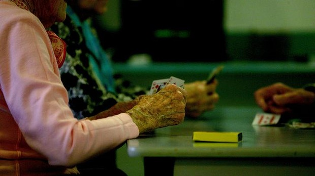

Grey army must fight to be treated with dignity and respect
August 8, 2014 - 12:15AM
Patricia Edgar

Studies show that personality, attitude and lifestyle are vital in determining whether we will live a long life well.
I was asked recently "Does ageing suck?" The very question is an example of the way discrimination works. Life does suck at times but, as a general description of the condition of old age, it's a cliche rather than reality.
People talk about "the problem of old age", which leads to very misleading perceptions of ageing and results in discrimination. It starts early with talk of 55 as the beginning of old age. And this is despite the fact that, whatever misfortunes we encounter along the way, most of us will live for close to a century.
About 30 per cent of a person's likelihood of living to 100 is determined by genes but several longitudinal studies have shown that personality, attitude and lifestyle are vital in determining whether we will live a long life well. This knowledge should be the basis of policy for ageing Australians.
We must stop talking about retirement and "having a well-deserved rest". It is well documented that retirement can lead to cognitive, emotional and physical deterioration for many. People in a late-stage career or living an active life after 55 still have much to give, even if they are not entirely sure what it may be. We need to think about Life Part Two; redesigning and reinventing our long life journey.
Health and satisfaction in the second half of life are critically tied to education and engagement. Education is not just for the young - it's a lifelong process. The brain needs to be active and stimulated with rich, new experiences. What confounds the brain enlivens the brain - even for those with dementia. This approach should be built into our education system.
Sadly, there are forces at work in society that try to ensure our old age will suck. For a start, we are told "we are a burden on society", we are "unproductive" and "a pampered generation who need to get back to work and apply for 40 jobs a week". Not so. Able-bodied people do not want to sit around twiddling their thumbs without making a contribution during what is likely to be the longest stage of their lives. Discrimination in the workplace is keeping us out of jobs.
The assumption many make is that if you are not in paid work you are dependent. But productivity does not simply mean paid work. Australia's gross domestic product fails to measure the significant dollar value of caring, voluntary, community and creative work, without which our economy could not function and none of which is a monopoly of the young.
When Treasurer Joe Hockey says people should work as long as they can, he discounts this significant contribution. He should ask Treasury to do some sums on the social capital that volunteer work produces and how that impacts the economy. Overall, volunteering contributes more than $200 billion to the Australian economy - more than mining, agriculture and the retail industry.
Older Australians are also told we will break the health system. This is simply not backed up by research and would be completely untrue if the medical profession moved away from medication and technological intervention towards a more preventive approach. Maintaining physical health means serious illness and morbidity is compressed into the last year or two of life, which means savings for the system. So measures to impose higher fees for seeing a doctor and increasing the cost of pharmaceuticals are counterproductive and will end up costing the system more.
Ageing Australians are also told we don't look so good. A multibillion-dollar body industry tries to convince us that we can keep age at bay with plastic surgery from our eyebrows to our privates and beyond. Yet it is important that the media portrays the natural character, diversity and beauty of people as they age, rather than present us with startled clones whose eyebrows are half way up their foreheads.
And we are ignored. There is no Minister for Ageing or a champion for ageing in the Federal Parliament. Older Australians barely rated a mention in the election campaign or since, except to be told we must work longer. This neglect tells us we are not important in our society.
The elders of Australia can and must change these attitudes. We have buying power and voting power. Women's Electoral Lobby made a difference to the status of women 40 years ago. Now it's time for EEL-Elders' Electoral lobby. We have a right to be treated with dignity and empathy, not isolated and ignored.
Dr Patricia Edgar is the author of In Praise of Ageing and an ambassador for the National Ageing Research Institute. This is an edited extract of her keynote speech to the Wicking Symposium on Ageing and Alzheimer's on Thursday.